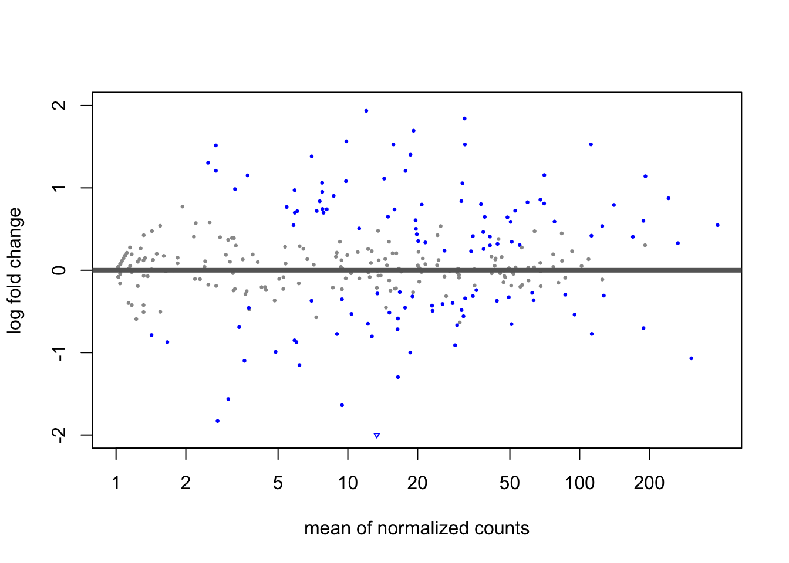
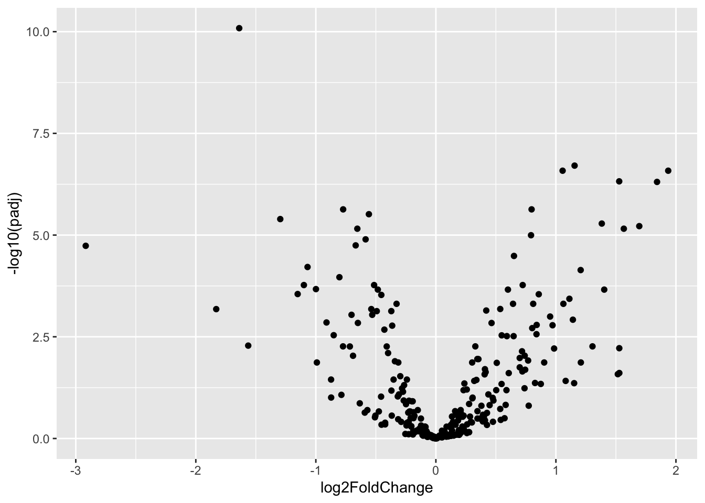
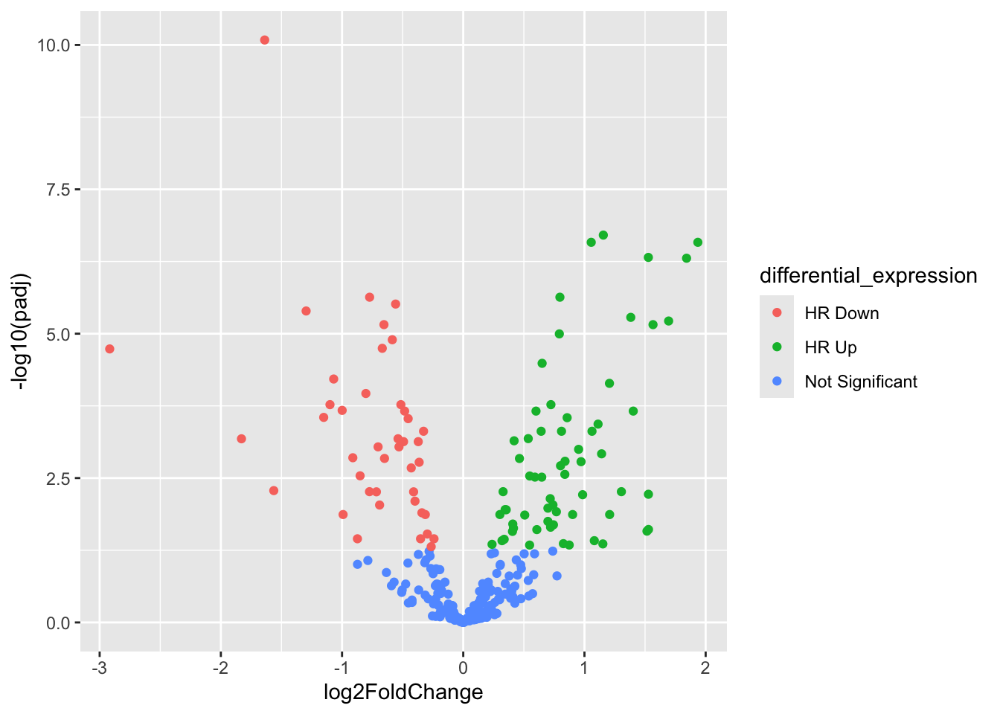
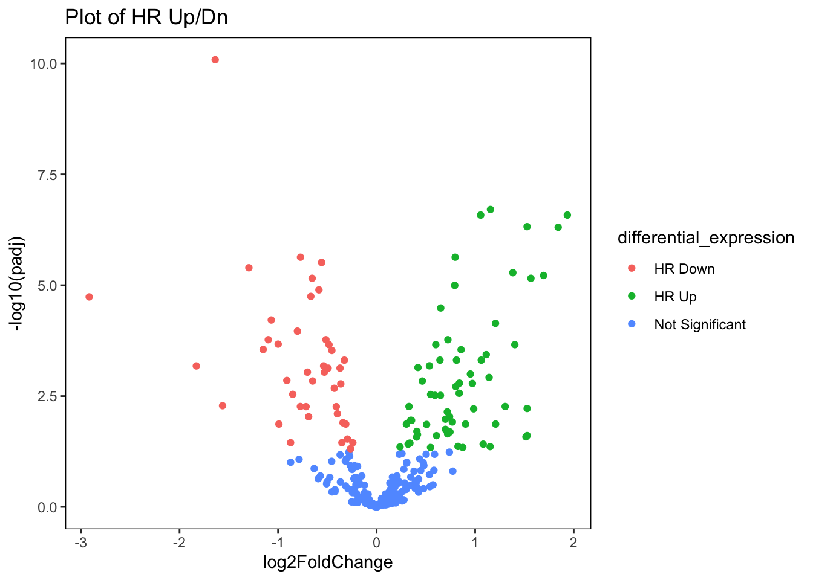
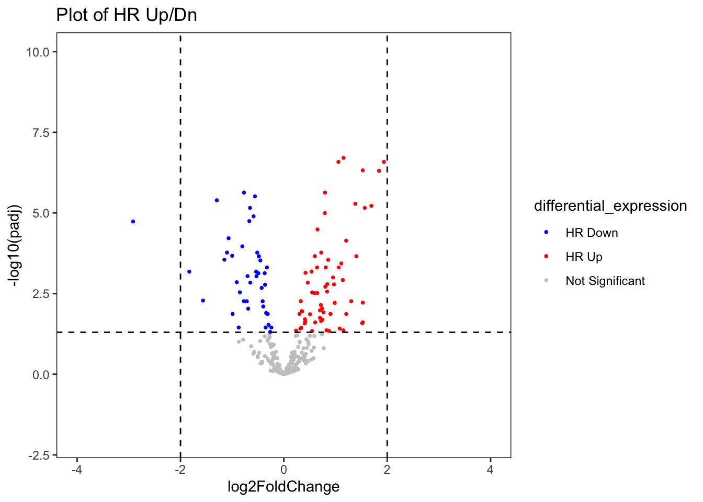
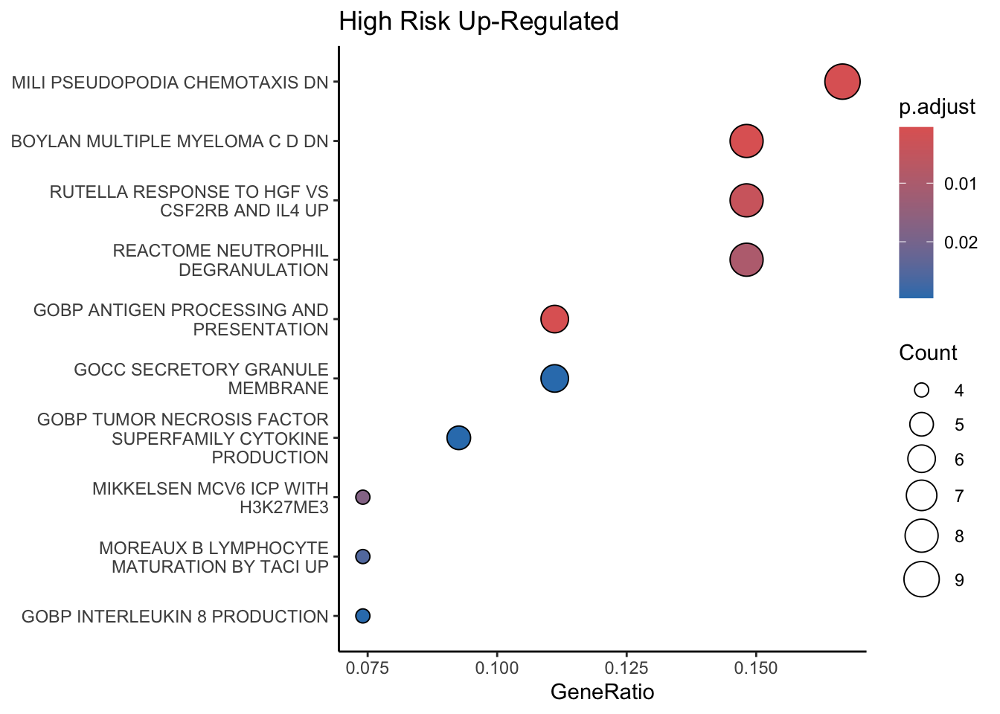
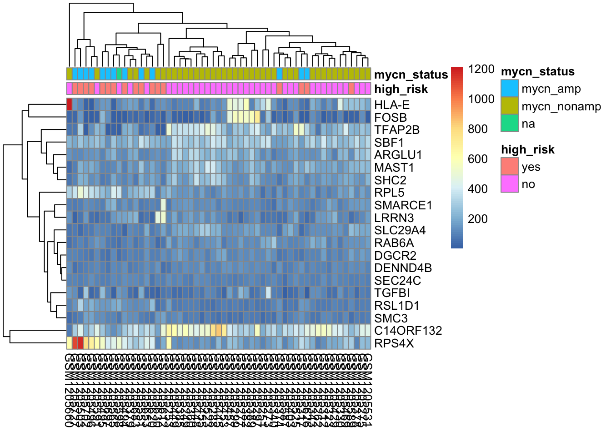
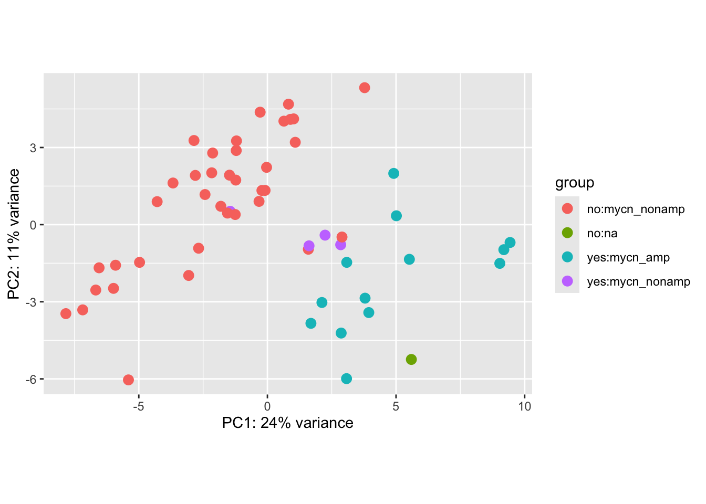

In this part we do transcriptomic analysis of neuroblastoma RNA-Seq isolated tumors of patients. We conduct the analysis according to reference documentation.
Reference: https://introtogenomics.readthedocs.io/en/latest/2021.11.11.DeseqTutorial.html
Reference of DESeq2 normalization by division by the size factors or normalization factors: https://rdrr.io/bioc/DESeq2/man/varianceStabilizingTransformation.html
library(readxl)
library(DESeq2)
library(ggplot2)
library(dplyr)
library(expss)
library("clusterProfiler")
library(pheatmap)
library(RColorBrewer)
Reference Values: 70 samples and 300 genes
r2_gse62564_GSVA_Metadata <- readRDS( "../../SIP/SIP2023_BME03/recombio bookdown/results/r2_gse62564_GSVA_Metadata.rds")
In this part we can select the number of tumor samples to analyze. In total, the original dataframe has 498 tumor samples so for the sake of time, we will select around 50 samples to start with.
set.seed(12345)
r2_gse62564_GSVA_Metadata <- r2_gse62564_GSVA_Metadata[sample(nrow(r2_gse62564_GSVA_Metadata), size=55), ]
It is not the first time that I encounter this Error: unable to find an inherited method for function ‘select’ for signature ‘x = “data.frame”’. Then I have to write dplyr:: in front of the select function, to select the variables that will define the metadata dataframe:
r2_gse62564_Metadata <- r2_gse62564_GSVA_Metadata %>% dplyr::select(c(high_risk, mycn_status))
r2_gse62564_Metadata$high_risk <- as.factor(r2_gse62564_Metadata$high_risk)
r2_gse62564_Metadata$sampleID <- rownames(r2_gse62564_Metadata)
In this part I transpose the metadata to allow removing the long list of phenotype scores from age_at_diagnosis to WEINMANN_ADAPTATION_TO_HYPOXIA_UP:
r2_gse62564_selected <- t(r2_gse62564_GSVA_Metadata %>% dplyr::select(-c(age_at_diagnosis:WEINMANN_ADAPTATION_TO_HYPOXIA_UP)))
Select random sample of three rows from data frame:
set.seed(12345)
r2_gse62564_rand_df <- r2_gse62564_selected[sample(nrow(r2_gse62564_selected), size=400), ]
r2_gse62564_rand_num_df <- as.data.frame(r2_gse62564_rand_df)
r2_gse62564_rand_num_df <- r2_gse62564_rand_num_df %>%
mutate_if(is.character,as.numeric)%>%
mutate_if(is.numeric, round)
dds_nb <- DESeqDataSetFromMatrix(countData = r2_gse62564_rand_num_df,
colData = r2_gse62564_Metadata,
design = ~ high_risk)## converting counts to integer mode
keep_nb <- rowSums(counts(dds_nb)) >= 10
dds_nb <- dds_nb[keep_nb,]
dds_nb$high_risk <- factor(dds_nb$high_risk, levels = c("yes","no"))
dds_nb <- DESeq(dds_nb)## estimating size factors## estimating dispersions## gene-wise dispersion estimates## mean-dispersion relationship## final dispersion estimates## fitting model and testing## -- replacing outliers and refitting for 5 genes
## -- DESeq argument 'minReplicatesForReplace' = 7
## -- original counts are preserved in counts(dds)## estimating dispersions## fitting model and testingres_nb <- results(dds_nb)
res_nb## log2 fold change (MLE): high risk no vs yes
## Wald test p-value: high risk no vs yes
## DataFrame with 400 rows and 6 columns
## baseMean log2FoldChange lfcSE stat pvalue
## <numeric> <numeric> <numeric> <numeric> <numeric>
## MLK7-AS1 1.31447 -0.5075966 0.365353 -1.389331 1.64732e-01
## ZNF562 31.53441 -0.5581062 0.104586 -5.336351 9.48357e-08
## PITX1 2.74169 -1.8298833 0.467518 -3.914040 9.07644e-05
## LOC100506258 2.97734 0.1881946 0.287578 0.654413 5.12846e-01
## SRSF10 51.81808 -0.0426755 0.101486 -0.420508 6.74114e-01
## ... ... ... ... ... ...
## HIST2H4B 5.88411 -0.851124 0.246887 -3.447422 0.000565965
## RHPN1 8.96054 0.213377 0.320608 0.665539 0.505705816
## PKN2 34.02251 0.230331 0.102567 2.245675 0.024724850
## MEP1A 1.31634 0.425583 0.407642 1.044012 0.296479728
## FBXL18 44.22974 0.319733 0.128816 2.482082 0.013061717
## padj
## <numeric>
## MLK7-AS1 3.01491e-01
## ZNF562 3.06635e-06
## PITX1 6.60311e-04
## LOC100506258 6.98882e-01
## SRSF10 8.24232e-01
## ... ...
## HIST2H4B 0.0028894
## RHPN1 0.6974426
## PKN2 0.0648192
## MEP1A 0.4638473
## FBXL18 0.0383935
plotMA(res_nb, ylim=c(-2,2))
resultsNames(res_nb)## character(0)summary(res_nb)##
## out of 400 with nonzero total read count
## adjusted p-value < 0.1
## LFC > 0 (up) : 70, 18%
## LFC < 0 (down) : 50, 12%
## outliers [1] : 0, 0%
## low counts [2] : 109, 27%
## (mean count < 1)
## [1] see 'cooksCutoff' argument of ?results
## [2] see 'independentFiltering' argument of ?results
res_nb <- res_nb[complete.cases(res_nb),]
res_nb_df <- as.data.frame(res_nb)
res_nb_volcPlot_df <- res_nb_df %>%
dplyr::mutate(differential_expression = ifelse(res_nb_df$log2FoldChange > 0 & res_nb_df$padj < 0.05, "HR Up", ifelse(res_nb_df$log2FoldChange < 0 & res_nb_df$padj < 0.05, "HR Down", "Not Significant")))
ggplot(data=res_nb_volcPlot_df,aes(x=log2FoldChange,y=-log10(padj)))+
geom_point()
ggplot(data=res_nb_volcPlot_df,aes(x=log2FoldChange,y=-log10(padj),col=differential_expression))+
geom_point()
ggplot(data=res_nb_volcPlot_df,
aes(x=log2FoldChange,y=-log10(padj),col=differential_expression
))+
geom_point()+
ggtitle("Plot of HR Up/Dn") +
theme(
plot.title = element_text(color="red", size=14, face="bold.italic"),
)+
theme_bw() + # Select theme with a white background
theme(panel.border = element_rect(colour = "black", fill = NA, size= 0.5),
panel.grid.minor = element_blank(),
panel.grid.major = element_blank()) ## Warning: The `size` argument of `element_rect()` is
## deprecated as of ggplot2 3.4.0.
## ℹ Please use the `linewidth` argument
## instead.
## This warning is displayed once every 8 hours.
## Call `lifecycle::last_lifecycle_warnings()`
## to see where this warning was generated.
ggplot(data = res_nb_volcPlot_df,
aes(x = log2FoldChange,
y = -log10(padj))) +
geom_point(aes(colour = differential_expression),
alpha = 1,
shape = 16,
size = 1) +
geom_hline(yintercept = -log10(0.05),
linetype = "dashed") +
geom_vline(xintercept = c(-2, 2),
linetype = "dashed") +
scale_x_continuous(limits = c(-4, 4)) +
# Add y limits
scale_y_continuous(limits = c(-2, 10)) + # Have tested the y limit up to 200
# Colors of ADRN and MES Genes
scale_color_manual(values = c("#0000ff", # Blue
"#ff0000", # Gray
"#c9c9c9"))+ # Red
ggtitle("Plot of HR Up/Dn") +
theme(
plot.title = element_text(color="red", size=14, face="bold.italic"),
)+
theme_bw() + # Select theme with a white background
theme(panel.border = element_rect(colour = "black", fill = NA, size= 0.5),
panel.grid.minor = element_blank(),
panel.grid.major = element_blank()) ## Warning: Removed 1 row containing missing values or
## values outside the scale range
## (`geom_point()`).
cross_cases(res_nb_volcPlot_df, differential_expression)| #Total | |
|---|---|
| differential_expression | |
| HR Down | 42 |
| HR Up | 63 |
| Not Significant | 186 |
| #Total cases | 291 |
res_nb_volcPlot_df["gene_symbol"] <- rownames(res_nb_volcPlot_df)
nb_volcPlo_Up <- subset(res_nb_volcPlot_df, differential_expression == "HR Up" )
List_nb_volcPlo_Up <- as.character(nb_volcPlo_Up$gene_symbol)
length(List_nb_volcPlo_Up)## [1] 63
library(msigdbr)
h_gene_sets_H = msigdbr(species = "Homo sapiens", category = c("H"))
h_gene_sets_C2 = msigdbr(species = "Homo sapiens", category = c("C2"))
h_gene_sets_C5 = msigdbr(species = "Homo sapiens", category = c("C5"))
msigdbr_df <- rbind(h_gene_sets_H, h_gene_sets_C2)
msigdbr_df <- rbind(msigdbr_df, h_gene_sets_C5)
msigdbr_t2g = msigdbr_df %>% dplyr::distinct(gs_name, gene_symbol) %>% as.data.frame()
enrichr_nb_volcPlo_Up <- enricher(List_nb_volcPlo_Up, TERM2GENE = msigdbr_t2g)
enrichr_nb_volcPlo_Up_df <- as.data.frame(enrichr_nb_volcPlo_Up)
dotplot(enrichr_nb_volcPlo_Up,
font.size = 6,
showCategory=10) + ggtitle("High Risk Up-Regulated")+
theme(axis.text.y = element_text(size = 6),
legend.text=element_text(size=6),
legend.key.size = unit(0.2, 'cm'))+
theme_classic()
vsd_nb <- varianceStabilizingTransformation(dds_nb)
head(assay(vsd_nb), 4)## GSM1205379 GSM1205288 GSM1205445 GSM1205455 GSM1205457 GSM1205389
## MLK7-AS1 2.688023 2.688023 2.688023 2.688023 2.977123 2.688023
## ZNF562 5.225106 5.185561 5.185561 4.872369 4.821297 4.821297
## PITX1 2.688023 2.688023 2.688023 2.688023 2.688023 2.688023
## LOC100506258 2.977123 3.192668 3.192668 2.977123 2.977123 2.977123
## GSM1205551 GSM1205330 GSM1205312 GSM1205589 GSM1205453 GSM1205495
## MLK7-AS1 2.688023 2.977123 2.688023 2.688023 2.688023 2.977123
## ZNF562 5.474709 5.507034 5.144874 4.655711 5.225106 5.373070
## PITX1 2.688023 2.688023 2.688023 2.688023 2.688023 2.688023
## LOC100506258 3.369538 2.977123 3.775873 2.688023 3.521428 2.688023
## GSM1205323 GSM1205727 GSM1205275 GSM1205340 GSM1205587 GSM1205503
## MLK7-AS1 2.688023 2.977123 2.688023 2.688023 2.737003 2.985519
## ZNF562 5.225106 5.896159 5.144874 4.325578 5.168947 5.559645
## PITX1 2.688023 2.688023 2.688023 3.775873 2.737003 4.182891
## LOC100506258 3.655450 3.521428 3.369538 3.521428 3.459248 2.985519
## GSM1205702 GSM1205653 GSM1205277 GSM1205660 GSM1205531 GSM1205523
## MLK7-AS1 2.978256 2.688023 2.688023 2.688023 2.688023 2.688023
## ZNF562 5.798292 5.225106 4.768274 5.301022 5.301022 5.144874
## PITX1 2.688848 4.325578 2.688023 2.688023 2.688023 2.688023
## LOC100506258 2.688848 2.977123 2.977123 3.369538 3.192668 2.688023
## GSM1205494 GSM1205697 GSM1205449 GSM1205565 GSM1205249 GSM1205496
## MLK7-AS1 2.977123 2.977123 2.692495 2.977123 2.690371 2.692495
## ZNF562 5.944008 5.599821 5.278415 5.686930 4.976662 5.811177
## PITX1 2.688023 3.192668 2.692495 5.373070 2.690371 2.692495
## LOC100506258 2.977123 3.192668 3.530402 2.977123 2.980348 2.692495
## GSM1205630 GSM1205251 GSM1205378 GSM1205429 GSM1205385 GSM1205343
## MLK7-AS1 2.688023 2.688023 2.688023 2.688023 2.688023 2.688023
## ZNF562 5.144874 4.768274 5.263574 5.373070 4.655711 5.225106
## PITX1 2.688023 2.688023 2.688023 2.688023 2.688023 2.977123
## LOC100506258 3.986316 2.977123 3.192668 2.977123 3.885506 3.192668
## GSM1205612 GSM1205253 GSM1205317 GSM1205299 GSM1205591 GSM1205360
## MLK7-AS1 2.688023 2.688023 2.984880 2.977123 2.688023 2.688023
## ZNF562 5.059793 5.686930 5.734612 4.872369 5.263574 5.225106
## PITX1 2.688023 2.688023 2.984880 2.688023 2.977123 2.688023
## LOC100506258 3.775873 3.192668 2.693671 2.977123 3.192668 2.977123
## GSM1205297 GSM1205598 GSM1205525 GSM1205262 GSM1205273 GSM1205469
## MLK7-AS1 2.688023 2.982874 2.688023 2.688023 2.688023 2.688023
## ZNF562 5.144874 5.644000 4.821297 4.821297 4.969218 4.821297
## PITX1 2.688023 2.692210 2.688023 2.688023 2.688023 2.688023
## LOC100506258 2.688023 2.692210 3.369538 2.977123 2.977123 3.521428
## GSM1205403 GSM1205374 GSM1205626 GSM1205448 GSM1205382 GSM1205620
## MLK7-AS1 2.977123 2.977123 2.977123 2.688023 2.977123 2.983266
## ZNF562 5.185561 5.474709 5.871620 5.185561 5.015237 5.862536
## PITX1 2.688023 2.688023 7.552517 2.688023 2.688023 5.239866
## LOC100506258 2.977123 2.688023 2.977123 2.977123 3.369538 2.983266
## GSM1205683
## MLK7-AS1 2.688023
## ZNF562 5.373070
## PITX1 2.688023
## LOC100506258 2.977123
select_nb <- order(rowMeans(counts(dds_nb,normalized=TRUE)),
decreasing=TRUE)[1:20]
df_nb <- as.data.frame(colData(dds_nb)[,c("high_risk", "mycn_status")])
# pheatmap(assay(dds_nb)[select_nb,], cluster_rows=FALSE, show_rownames=FALSE,
# cluster_cols=FALSE, annotation_col=df_nb)
pheatmap(assay(dds_nb)[select_nb,],annotation_col=df_nb)
sampleDists_nb <- dist(t(assay(vsd_nb)))sampleDistMatrixNb <- as.matrix(sampleDists_nb)
rownames(sampleDistMatrixNb) <- paste(vsd_nb$high_risk, sep="-")
colnames(sampleDistMatrixNb) <- NULL
colors <- colorRampPalette( rev(brewer.pal(9, "Blues")) )(255)
pheatmap(sampleDistMatrixNb,
clustering_distance_rows=sampleDists_nb,
clustering_distance_cols=sampleDists_nb,
col=colors)
plotPCA(vsd_nb, intgroup=c("high_risk", "mycn_status"))## using ntop=500 top features by variance
sessionInfo()## R version 4.4.1 (2024-06-14)
## Platform: aarch64-apple-darwin20
## Running under: macOS Big Sur 11.4
##
## Matrix products: default
## BLAS: /Library/Frameworks/R.framework/Versions/4.4-arm64/Resources/lib/libRblas.0.dylib
## LAPACK: /Library/Frameworks/R.framework/Versions/4.4-arm64/Resources/lib/libRlapack.dylib; LAPACK version 3.12.0
##
## locale:
## [1] en_US.UTF-8/en_US.UTF-8/en_US.UTF-8/C/en_US.UTF-8/en_US.UTF-8
##
## time zone: America/Chicago
## tzcode source: internal
##
## attached base packages:
## [1] stats4 stats graphics grDevices utils datasets methods
## [8] base
##
## other attached packages:
## [1] msigdbr_7.5.1 RColorBrewer_1.1-3
## [3] pheatmap_1.0.12 clusterProfiler_4.12.6
## [5] expss_0.11.6 DESeq2_1.44.0
## [7] SummarizedExperiment_1.34.0 Biobase_2.64.0
## [9] MatrixGenerics_1.16.0 matrixStats_1.4.1
## [11] GenomicRanges_1.56.1 GenomeInfoDb_1.40.1
## [13] IRanges_2.38.1 S4Vectors_0.42.1
## [15] BiocGenerics_0.50.0 readxl_1.4.3
## [17] dplyr_1.1.4 maditr_0.8.4
## [19] ggplot2_3.5.1
##
## loaded via a namespace (and not attached):
## [1] rstudioapi_0.16.0 jsonlite_1.8.9 magrittr_2.0.3
## [4] farver_2.1.2 rmarkdown_2.28 fs_1.6.4
## [7] zlibbioc_1.50.0 vctrs_0.6.5 memoise_2.0.1
## [10] ggtree_3.12.0 htmltools_0.5.8.1 S4Arrays_1.4.1
## [13] cellranger_1.1.0 gridGraphics_0.5-1 SparseArray_1.4.8
## [16] sass_0.4.9 bslib_0.8.0 htmlwidgets_1.6.4
## [19] fontawesome_0.5.2 plyr_1.8.9 httr2_1.0.5
## [22] cachem_1.1.0 igraph_2.0.3 lifecycle_1.0.4
## [25] pkgconfig_2.0.3 gson_0.1.0 Matrix_1.7-0
## [28] R6_2.5.1 fastmap_1.2.0 GenomeInfoDbData_1.2.12
## [31] aplot_0.2.3 digest_0.6.37 enrichplot_1.24.4
## [34] colorspace_2.1-1 patchwork_1.3.0 AnnotationDbi_1.66.0
## [37] RSQLite_2.3.7 labeling_0.4.3 fansi_1.0.6
## [40] httr_1.4.7 polyclip_1.10-7 abind_1.4-8
## [43] compiler_4.4.1 bit64_4.5.2 withr_3.0.1
## [46] htmlTable_2.4.3 backports_1.5.0 BiocParallel_1.38.0
## [49] viridis_0.6.5 DBI_1.2.3 highr_0.11
## [52] ggforce_0.4.2 R.utils_2.12.3 MASS_7.3-61
## [55] rappdirs_0.3.3 DelayedArray_0.30.1 tools_4.4.1
## [58] scatterpie_0.2.4 ape_5.8 R.oo_1.26.0
## [61] glue_1.8.0 nlme_3.1-166 GOSemSim_2.30.2
## [64] shadowtext_0.1.4 grid_4.4.1 checkmate_2.3.2
## [67] reshape2_1.4.4 fgsea_1.30.0 generics_0.1.3
## [70] gtable_0.3.5 R.methodsS3_1.8.2 tidyr_1.3.1
## [73] data.table_1.16.0 tidygraph_1.3.1 utf8_1.2.4
## [76] XVector_0.44.0 ggrepel_0.9.6 pillar_1.9.0
## [79] stringr_1.5.1 babelgene_22.9 yulab.utils_0.1.7
## [82] splines_4.4.1 tweenr_2.0.3 treeio_1.28.0
## [85] lattice_0.22-6 bit_4.5.0 tidyselect_1.2.1
## [88] GO.db_3.19.1 locfit_1.5-9.10 Biostrings_2.72.1
## [91] knitr_1.48 gridExtra_2.3 xfun_0.48
## [94] graphlayouts_1.2.0 stringi_1.8.4 UCSC.utils_1.0.0
## [97] lazyeval_0.2.2 ggfun_0.1.6 yaml_2.3.10
## [100] evaluate_1.0.0 codetools_0.2-20 ggraph_2.2.1
## [103] tibble_3.2.1 qvalue_2.36.0 ggplotify_0.1.2
## [106] cli_3.6.3 munsell_0.5.1 jquerylib_0.1.4
## [109] Rcpp_1.0.13 png_0.1-8 parallel_4.4.1
## [112] blob_1.2.4 DOSE_3.30.5 tidytree_0.4.6
## [115] viridisLite_0.4.2 scales_1.3.0 purrr_1.0.2
## [118] crayon_1.5.3 rlang_1.1.4 cowplot_1.1.3
## [121] fastmatch_1.1-4 KEGGREST_1.44.1